Contents
How to use this manual#
This manual teaches you to run games with IPRPS OS. You will learn the tools one at a time. Each chapter ends with a walkthrough: a short exercise you do on your own computer, step by step.
All the examples use one campaign, Iron City Blues. It is a noir mystery on the Infinite Plane, with rain, gas lamps and a harbor full of secrets. Four players are at the table:
| Player | Character | Who they are |
|---|---|---|
| Dana | Brenna Holt | Wolffolk tracker who used to work for the Night Watch |
| Marcus | Tobin Fairweather | Human insurance investigator |
| Priya | Mira Quickstep | Catfolk cat burglar |
| Leo | Dr. Oro Kessel | Gemp harbor doctor |
If you have run the walkthrough adventure Fog on Pier Nine, you already know these people. That's fine if you haven't.
How to read the steps:
- Words in bold are buttons, menus or labels you will see on the screen.
- An arrow (→) means "then choose". IPRPS → IPRPS Welcome means: open the IPRPS menu, then choose IPRPS Welcome.
- Boxes that start with Try it are short practice tasks.
- Boxes that start with Tip share a shortcut or a good habit.
What you need: a computer running IPRPS OS (any edition), and a Wi-Fi network. For the Table chapters, borrow one or two phones, or use a tablet or laptop. The IPRPS Oracle chapter needs the Medium or Advanced edition.
| Chapter | You will learn to | Time |
|---|---|---|
| 1. What makes IPRPS OS different | Know when IPRPS OS is the right tool | 10 minutes |
| 2. Get set up | Create your campaign and choose your apps | 15 minutes |
| 3. Prepare a session | Collect characters, notes, pictures and sound | 20 minutes |
| 4. Open the IPRPS Table | Get players connected on their phones | 15 minutes |
| 5. Roll the IPRPS way | Read checks, bands and BTN | 15 minutes |
| 6. Run a fight | Track initiative, HP, AR and conditions | 20 minutes |
| 7. Set the mood | Use the Soundboard and the Table's sound | 10 minutes |
| 8. Ask the IPRPS Oracle | Improvise NPCs and scenes with private AI | 15 minutes |
| 9. Wrap up the night | Write the recap and track XP | 10 minutes |
| 10. Keep it running | Install updates and invite remote players | 10 minutes |
Chapter 1: What makes IPRPS OS different#
Most digital tools for tabletop games are websites. You and your players sign in, and the game lives on the company's computers. IPRPS OS is different. It is a whole computer system made for the Session Master. It runs on your own PC, and your game lives there too.
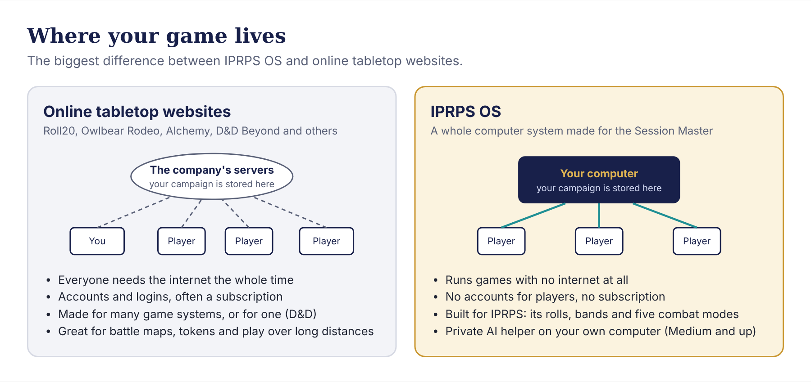
Five things that set IPRPS OS apart#
1. It works with no internet at all. Your players join from their own phones, tablets or laptops over your home Wi-Fi. They don't need an account, an app or a password. They scan a QR code, type a six-letter join code, and they are in. If the internet goes down on game night, nothing stops.
2. It speaks IPRPS. Other tools are made for many game systems, or for one other system. IPRPS OS is made for the Infinite Plane Role Playing System. The dice know the success bands, the BTN (Base Target Number), Skill Shift and Attribute Shift. The combat tracker subtracts AR (Armor Rating) from damage and supports all five IPRPS combat modes. The Character Creator counts Development Points for you.
3. It has a private AI helper. In the Medium and Advanced editions, the IPRPS Oracle runs on your own computer. It can invent an NPC, a place or a read-aloud description for you. It reads your campaign, so its ideas fit your story. Its own model keeps everything on your computer, with no account or fee. If you want faster answers, you can switch it to Claude, an online AI, with your own key.
4. Every tool is connected. The dice roller and the combat tracker write into the session log as you play. After the game, the log turns into a recap with one click. Character sheets you import show up in the combat tracker, the Table and the Oracle. One click on Session Master Mode opens everything you need for game night.
5. Your game is yours. Your campaigns, notes, sheets and recordings stay on your computer. There is no subscription to keep paying, and no company can close your account or lose your campaign.
How it compares with popular online tools#
Here is a short, fair comparison with five well-known tools. These tools are good at many things, and many groups use them happily. The details below are a summary as of November 2026; check each website for current features and prices.
| Tool | What it is | What it does best | How it differs from IPRPS OS |
|---|---|---|---|
| Roll20 | A virtual tabletop website for many game systems | Battle maps and tokens, character sheets for many systems, a big store of official adventures, voice and video chat | Runs on Roll20's servers and needs the internet. Some features, like dynamic lighting and more storage, need a paid subscription |
| Owlbear Rodeo | A simple map-and-token website | Quick, clean battle maps with very little setup, plus add-on extensions | Online only. Focused on maps, so rules, notes and campaign records happen somewhere else. Paid plans add storage |
| Alchemy RPG | A "cinematic" virtual tabletop website | Mood: animated scenes, music and a story-first, theater-of-mind feel | Online only, with free and paid plans. Built for other publishers' games, not for IPRPS rolls |
| Fantasy Grounds | A desktop program for many game systems | Deep rules automation for supported systems, and a large content library | The base program is free, but most official content is sold. It is a program on top of your computer, not a whole system with prep, writing and AI tools |
| D&D Beyond | The official online toolset for Dungeons & Dragons | D&D character building, rules lookup and its own maps tool | Made only for D&D, and needs an account and the internet. Custom maps need a paid tier |
When another tool is a better fit. IPRPS OS 1.0 doesn't have battle maps with movable tokens, fog of war, or built-in voice and video chat. If your group plays mostly online, every week, with a battle grid, a website tool may suit you better for that part. You can still use one: open it in the web browser on IPRPS OS, and keep using the IPRPS tools for dice, combat, notes and recaps.
When IPRPS OS shines. IPRPS OS is at its best when your group meets in person, with phones and tablets around the table. It is also the best fit when you play IPRPS, when the internet is slow or missing, and when you want your campaign kept private.
Chapter 2: Get set up#
Your first login#
The first time you log in, IPRPS Welcome opens. It is a short tour that takes about five minutes. You can skip any step and come back later from IPRPS → IPRPS Welcome.
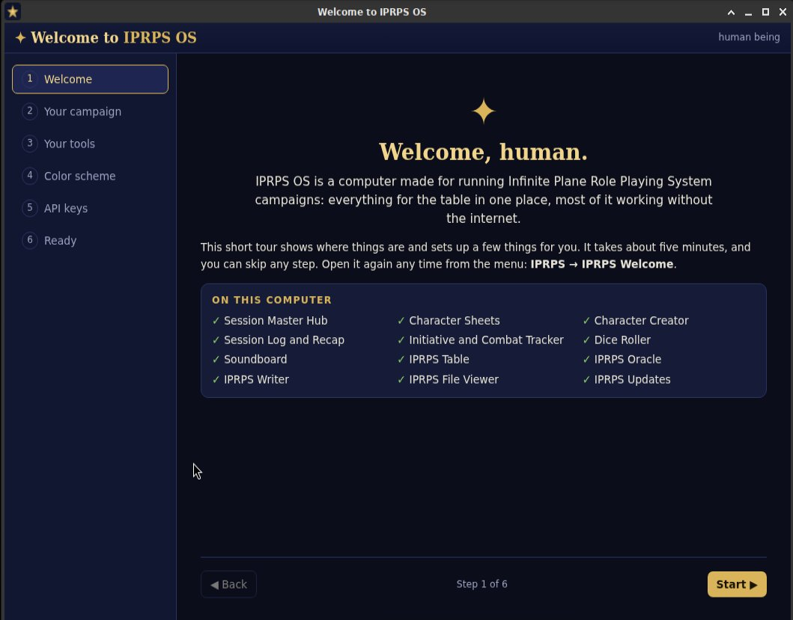
The tour has five parts:
- On this computer: which edition you have and which IPRPS apps are installed.
- Your campaign: create your first campaign.
- Your tools: every IPRPS app, with a short description and an Open button.
- Color scheme: how the session tools look. Choose Night, Parchment, Forest or High contrast.
- API keys for online AI apps: only needed for the two online AI apps. The offline tools never need keys.
Campaigns hold everything#
A campaign is the folder for your whole story. Sessions, the session log, fights, character sheets, NPCs and quests all belong to a campaign. The Oracle reads it too. So create your campaign first.
The Session Master Hub#
The Session Master Hub is your home page. Each tile opens an app. Open it from the panel at the top of the screen or from the IPRPS menu. The first time, it asks you to sign in. That one sign-in covers every IPRPS app on the computer.
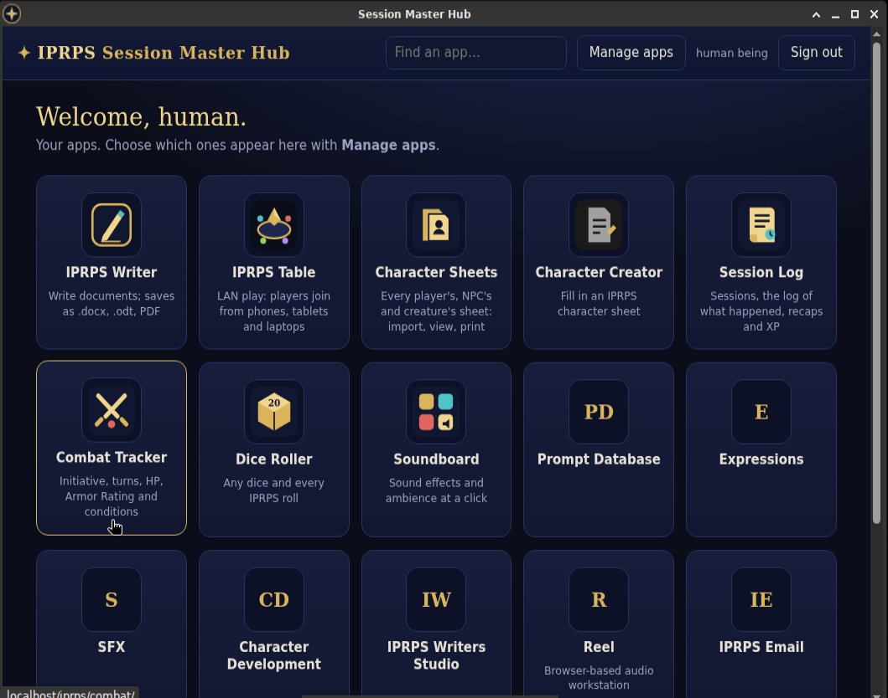
You decide which tiles appear. Choose Manage apps, switch apps on or off, and choose Save. Each Session Master on the computer keeps their own choice. Reset to defaults brings back the standard set.
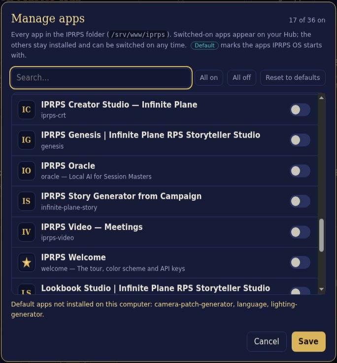
Chapter 3: Prepare a session#
Good prep makes game night smooth. IPRPS OS gives you a place for each kind of material.
Your campaign folders#
Your home folder has a Campaigns folder with three folders inside it:
| Folder | Put this inside | Used by |
|---|---|---|
| Campaigns/Handouts | Letters, clues, portraits of NPCs | The IPRPS Table (Add media…) |
| Campaigns/Maps | Maps of cities, buildings and dungeons | The IPRPS Table and the player display |
| Campaigns/Audio | Music and background sound (MP3, OGG, WAV, M4A) | Session Master Mode plays it as looping ambience |
Use pictures and sounds that you made yourself, or that you have the right to use.
Notes in IPRPS Writer#
IPRPS Writer is a word processor. Use it for scene notes, NPC lists and read-aloud text. It saves by itself as you type. Save as makes a Word file (.docx), an OpenDocument file (.odt), plain text or a web page. Ctrl+P prints, or saves a PDF.
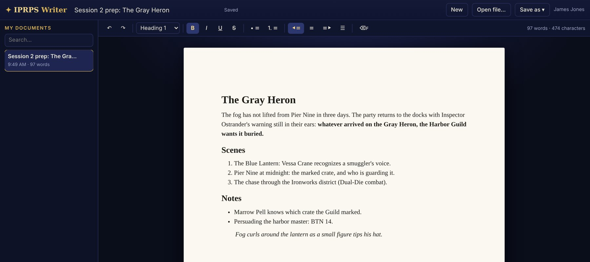
Character sheets#
IPRPS OS has two character sheet apps that work together:
- Character Creator is the IPRPS character sheet. It tracks attributes, skills, advantages, spells and a portrait. It also counts the Development Points you spend, so players can't overspend by mistake.
- Character Sheets is your library. It keeps every player character, NPC and creature, sorted by campaign.
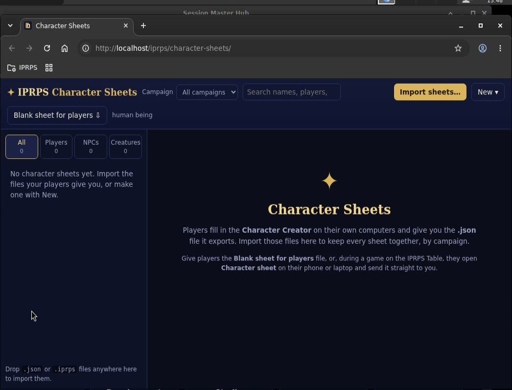
There are two ways to get your players' characters:
- Before the game. In Character Sheets, choose Blank sheet for players. This saves the Character Creator as one file. Give it to your players by USB stick, email or a shared folder. They open it in any web browser, make their character, and send you the
.jsonfile it saves. You choose Import sheets…, or simply drop the files onto the Character Sheets window. - At the table. Players open 📜 Sheet on their phone or laptop in the IPRPS Table and fill it in there. When they send it, it appears in your Table console under 📜 Character sheets, and you choose Import to Character Sheets.
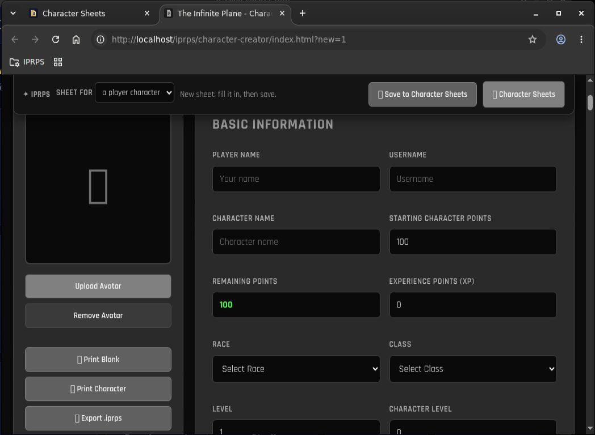
Chapter 4: Open the IPRPS Table#
The IPRPS Table is the heart of in-person play. Your players join from their own devices. They can chat, roll IPRPS dice, see pictures and hear sound you send, and fill in their character sheets. You control everything from the console on your computer.
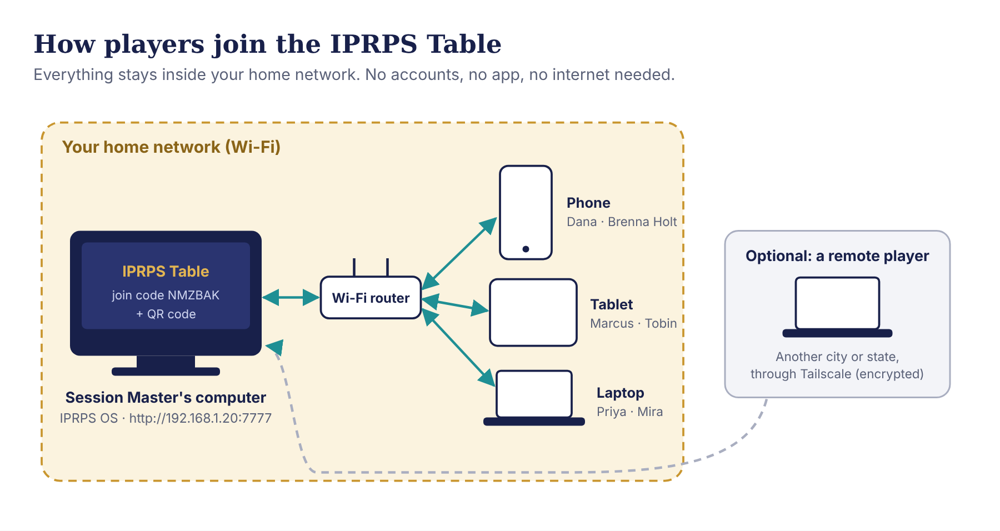
Session Master Mode: game night in one click#
About fifteen minutes before players arrive, choose Session Master Mode on the panel. With one click, it:
- opens the Session Master Hub;
- plays your Campaigns/Audio folder as shuffled, looping background sound, in a small window with play, pause and volume buttons;
- with a second screen (TV, projector or monitor), opens the full-screen player display there; with one screen, it opens the IPRPS Table console instead;
- in Medium and Advanced, warms up the IPRPS Oracle, so its first answer comes quickly.
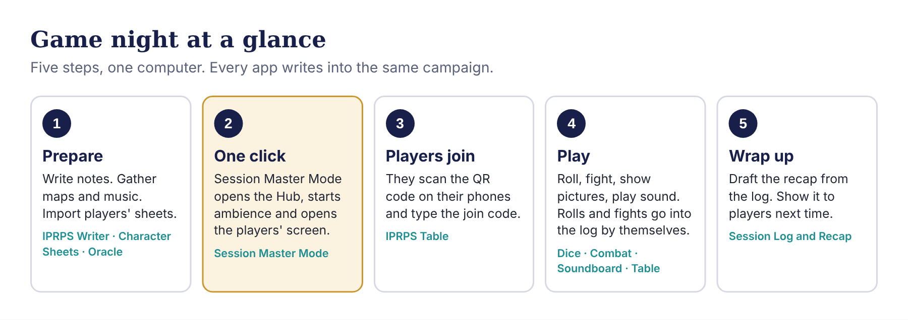
Opening the table#
The table starts Closed. Nobody can join until you open it.
- In the console, click the name at the top and type the campaign name. Players see it.
- Choose Open the table. The status changes to Open.
- The Players join here box shows the join code, the computer's address and a QR code.
How players join#
Each player, on a device connected to the same Wi-Fi:
- scans the QR code with the camera (this fills in the code), or opens the address in any web browser;
- types their name and, if they like, their character's name;
- taps Join the table.
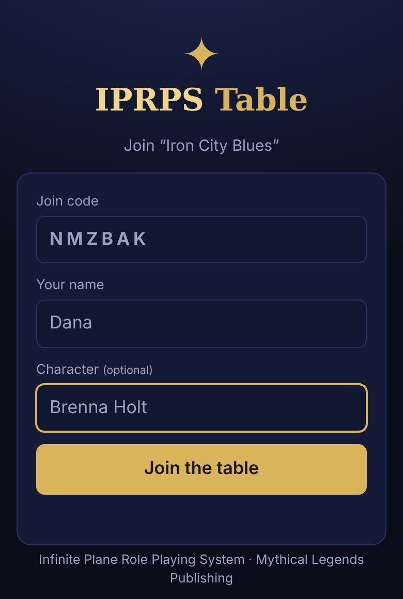
Each player appears under At the table with a green dot when they are online. When everyone is in, tick Lock so nobody else can join.
What you can do from the console#
| You want to | Do this |
|---|---|
| Talk to everyone | Type in the message box with Everyone selected, then Send |
| Whisper to one player | Choose their name in the To menu, or choose Message under their name |
| Talk to part of the party | Tick the players, type a name under Groups, choose Make from selected |
| Show a picture or video | Under Push to screens, choose who sees it, then Add media… and Show |
| Read a scene aloud | Open Show a text card, type a title and the text, then Show on screens |
| Play music or sound on their devices | Choose ♪ Play on an audio file in your media list; tick Loop to repeat it |
| Clear the players' screens | Clear screens |
| Roll in secret | Set the dice menu to Secret (only me) |
| Start fresh next time | Session → New session (clear chat) |
Your players see what you send at the top of their screens. The dice bar is at the bottom.
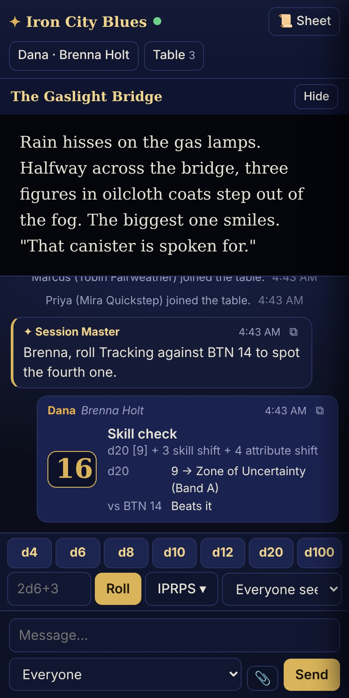
Privacy at the table. You see messages sent to everyone and to you. Messages that players send only to other players stay between them. Every roll is made on your computer, so nobody can fake a roll.
Chapter 5: Roll the IPRPS way#
IPRPS uses a d20 for skill checks. The roll has two parts, and IPRPS OS shows both every time.
The total. Roll 1d20, then add the Skill Shift (the skill divided by 10, rounded down) and the Attribute Shift (the attribute minus 10). Compare the total with the BTN (Base Target Number) that you set for the task.
The band. The d20 by itself also falls in a band. Band A answers "yes or no?". Band B answers "how well?".
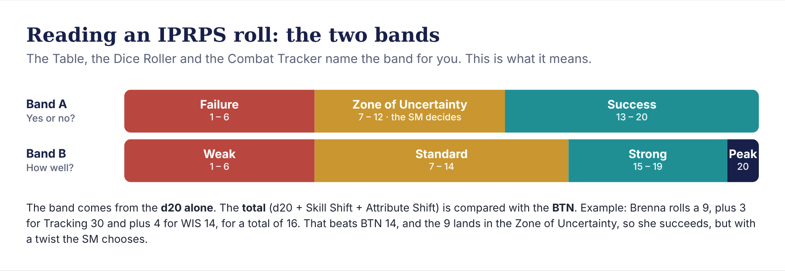
An example. Brenna tracks the smugglers. Her player rolls a 9 on the d20. Tracking 30 gives a Skill Shift of +3, and WIS 14 gives an Attribute Shift of +4. The total is 16, which beats BTN 14. But the 9 lands in the Zone of Uncertainty, so you, the Session Master, decide the twist. Maybe she finds the trail, but the smugglers hear her coming.
You never have to do this math. The Table, the Dice Roller and the Combat Tracker do it, and they name the band for you.
Three places to roll#
1. On the IPRPS Table. Players open IPRPS ▾ on the dice bar and pick a roll: Skill check, Initiative, Reaction, Trinity Hand, Dual-Die attack, Infinite Convergence, RPS stance, or a weapon's damage. They type their numbers and roll. They choose who sees it: Everyone sees, Only the SM sees or Only I see.
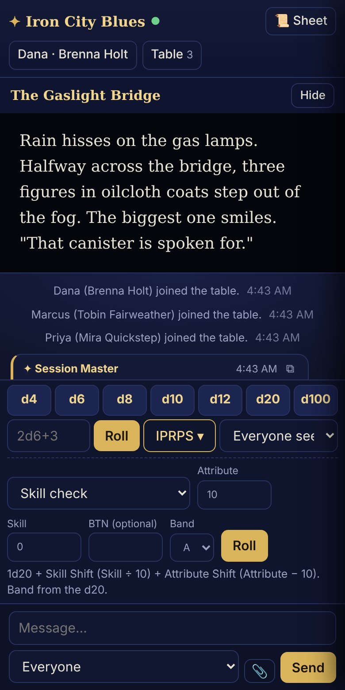
2. In the Dice Roller on your computer. It has every die, any dice formula (such as 2d6+3), and the same IPRPS rolls. Under After each roll you choose what happens next: Add it to the session log, Show it on the player display, Show it on the IPRPS Table, or Secret roll (only you see it). The History keeps every roll.
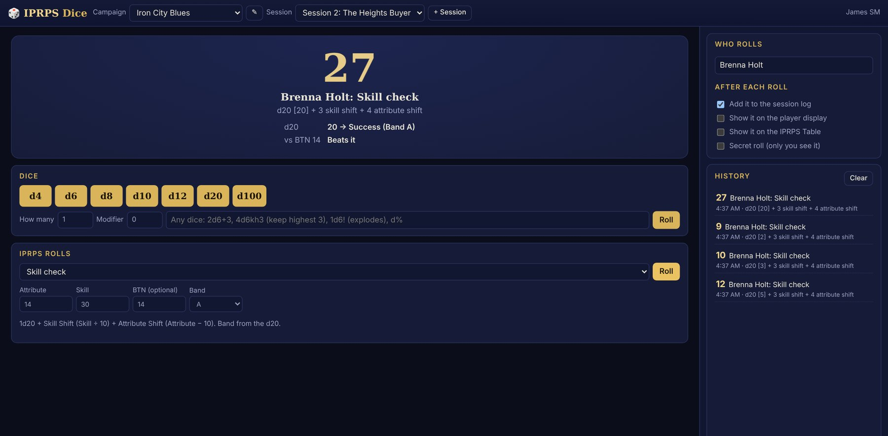
3. In the Combat Tracker during fights (Chapter 6), with Quick roll.
Chapter 6: Run a fight#
The Initiative and Combat Tracker keeps a fight moving. It tracks turn order, rounds, HP, Armor Rating and conditions for every fighter. Fights are saved by session, so you can stop and pick up later.
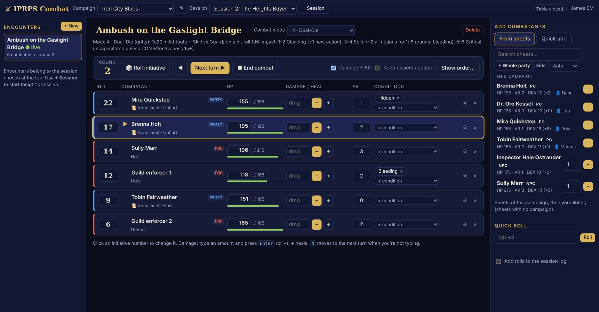
The five IPRPS combat modes#
Pick the mode in the Combat mode menu. The tracker shows a short reminder of how that mode works.
| Mode | Best for | In one line |
|---|---|---|
| 1 · Standard | Most fights | Initiative 1d20 + DEX modifier. Attack 1d20 + Skill Shift + Attribute Shift against Guard. Damage − AR |
| 2 · Trinity Hand | Bosses, hordes, player-versus-player | Everyone rolls 1d3 Velocity, 1d20 Impact and 1d12 Guard at once. Bosses roll extra Impact dice (Hydra Hand) |
| 3 · Rock-Paper-Scissors | Quick story skirmishes | Rock beats Scissors, Scissors beats Paper, Paper beats Rock |
| 4 · Dual-Die | Gritty, dangerous fights | On a hit, roll 1d6 Impact: Glancing, Solid or Critical wounds |
| 5 · Infinite Convergence | One big, decisive clash | Each fighter picks a Blur level: more dice for speed, or bigger dice for precision. Top results explode |
The main controls#
| Control | What it does |
|---|---|
| + New | Makes a new encounter in tonight's session |
| From sheets | Adds characters from Character Sheets. + Whole party adds every player character at once |
| Quick add | Adds fighters by hand: name, how many, HP, AR and initiative modifier |
| 🎲 Roll initiative | Rolls for every fighter who doesn't have a number yet |
| ▶ Start combat / Next turn ▶ | Starts the fight and moves to the next fighter. The N key does the same |
| Damage box | Type the damage and press Enter. With Damage − AR ticked, the tracker subtracts the target's AR for you. + heals |
| + condition | Adds a condition such as Bleeding or Hidden |
| Keep players updated | Shows the turn order to players after each turn |
| ■ End combat | Ends the fight and records it in the session log |
Chapter 7: Set the mood#
Sound turns a description into a scene. IPRPS OS gives you three ways to play it.
| Sound | Where it plays | How |
|---|---|---|
| Ambience playlist | Your computer's speakers | Session Master Mode plays your Campaigns/Audio folder |
| Soundboard pads | Your speakers, and players' devices if you choose | Click a pad, or press its key |
| Table sound | Players' phones and laptops | ♪ Play in the Table console |
The Soundboard#
The Soundboard puts sounds on big buttons called pads. The built-in sounds are made by the computer as they play, so they need no files and no internet.
- ∞ pads loop until you click them again: rain, storm, wind, campfire, ocean, river, cave drips, night crickets, a dungeon drone and a tavern hum. Several can play together.
- Effect pads play once: thunder, a sword clash, an arrow, a spell, a gong, a war horn, level up and more.
- Keys 1–0 and Q–P play the first twenty pads. Esc fades everything out.
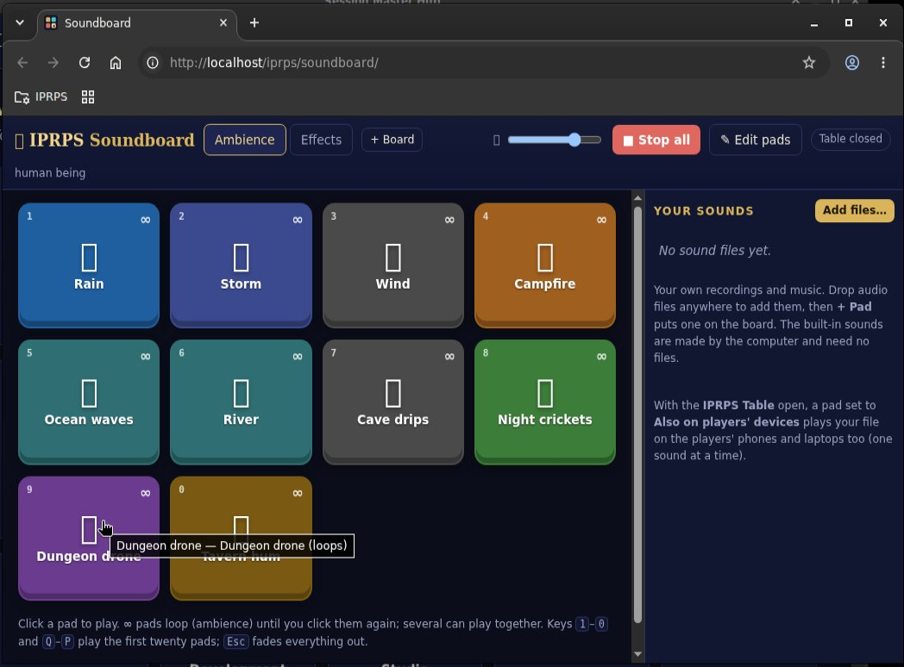
Add your own music and recordings with Add files…, or drop them on the window. Choose + Pad to put one on a board. Make a new board, such as Tavern or Battle, with + Board. To change a pad, choose ✎ Edit pads and click it. A pad set to Also on players' devices plays your file on the players' phones too, while the Table is open.
Chapter 8: Ask the IPRPS Oracle (Medium and Advanced)#
Players often go somewhere you didn't plan. The IPRPS Oracle helps you keep up. It is a storyteller AI. Its model, Llama 3.2 3B, runs entirely on your computer. It needs no internet, no account and no API key, and nothing you type leaves the machine. Built with Llama.
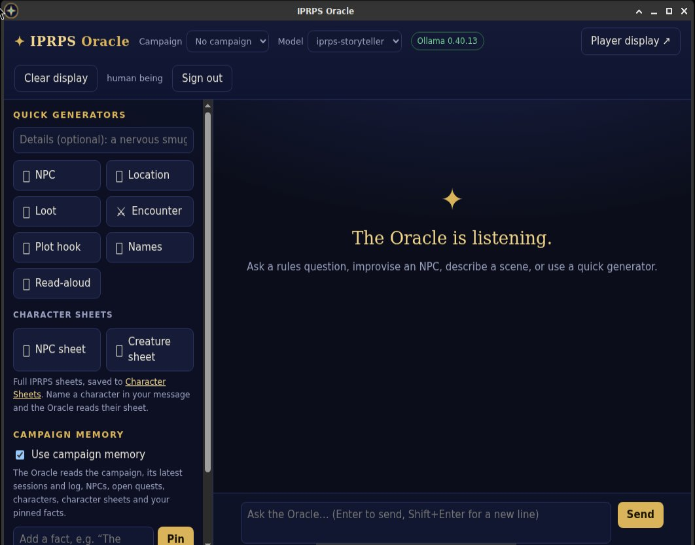
What it can do:
- Quick generators: NPC, Location, Loot, Encounter, Plot hook, Names and Read-aloud. Type a few words, such as a nervous dockhand, then choose a generator.
- Character sheets: NPC sheet and Creature sheet write complete IPRPS sheets and save them to Character Sheets.
- Campaign memory: it reads your campaign, its latest sessions and log, NPCs, open quests and character sheets. Pin facts it must always respect.
- Share it: under each answer, Show players puts it on the player display, Pin to memory saves it as a fact, and Save NPC keeps a character for later.
Good habits:
- Set the Campaign menu at the top before you ask, so the Oracle knows your story.
- Pin the facts that matter, like who is secretly working for whom.
- Treat answers as ideas. You are the Session Master, so change anything you like.
- The first answer of the day is slower while the AI loads. Session Master Mode warms it up for you.
- On an older computer, a long answer can take a minute or more. Clear this chat between scenes, and untick Use campaign memory for Names and Loot. Both make answers start sooner.
Optional: Claude, the online AI#
The local model is free and private, but it can be slow on older computers. If you have internet, the Oracle can use Claude, an AI made by Anthropic, instead. Claude usually answers in seconds and writes richer scenes. You need your own Anthropic API key, and Anthropic charges your account a small amount for each answer.
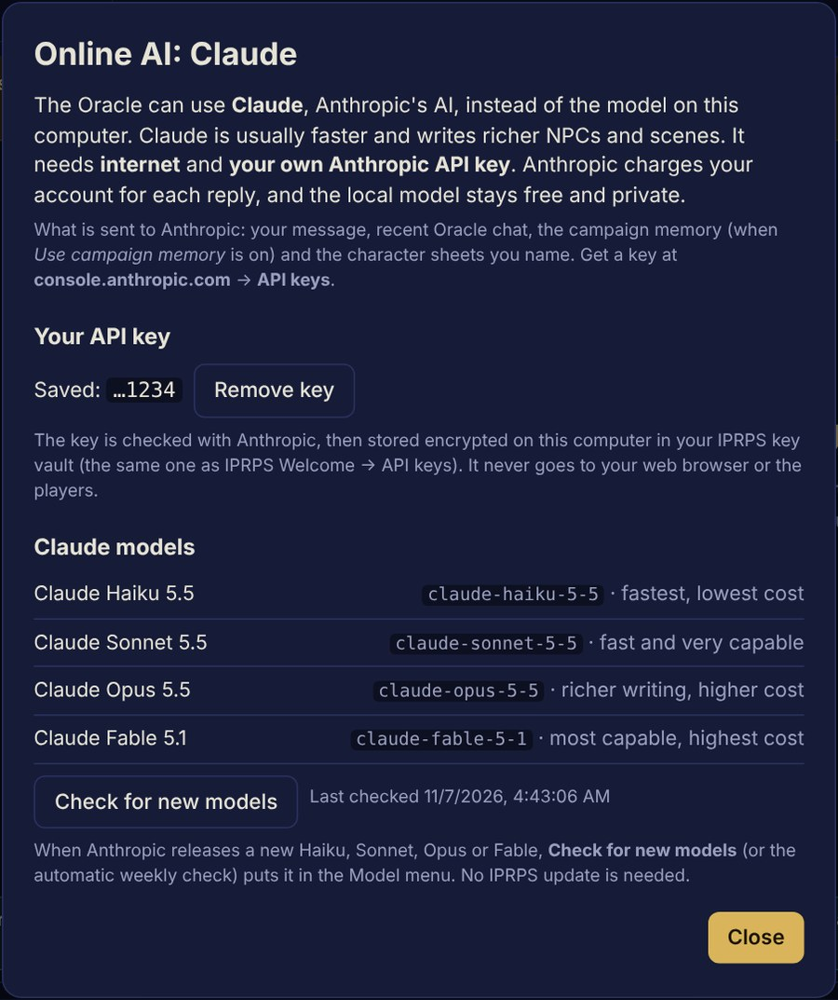
Set it up once:
- Get a key at console.anthropic.com, under API keys. It starts with
sk-ant-. - In the Oracle, choose Online AI… next to the Model menu.
- Paste the key and choose Check and save. The Oracle tests the key first. Then it stores it, locked with encryption, on your computer.
Choose a model in the Model menu, under Online: Claude:
| Model | Good for |
|---|---|
| Claude Haiku | The fastest and cheapest. Quick NPCs and names at the table |
| Claude Sonnet | Fast and very capable. A good everyday choice |
| Claude Opus | Richer writing, at a higher cost. Prep work between sessions |
| Claude Fable | Anthropic's most capable model, at the highest cost |
What changes when Claude is on:
- The top bar turns teal and says Online. A notice above the message box reminds you that your message, the campaign memory and any character sheets you name go to Anthropic.
- Recaps (✦ Draft with the Oracle) and NPC sheet use Claude too.
- To go back, choose iprps-storyteller under On this computer. Remove key deletes your key.
New Claude models. When Anthropic releases a new model, choose Check for new models in Online AI…. The Oracle also checks once a week by itself. The new model shows up in the menu. You don't need an IPRPS update.
Chapter 9: Wrap up the night#
The Session Log and Recap keeps a record of every game night. Notes, events, rolls, fights, loot and XP go in as you play. The Dice Roller, the Combat Tracker and the Oracle add their own entries, so your log fills up by itself.
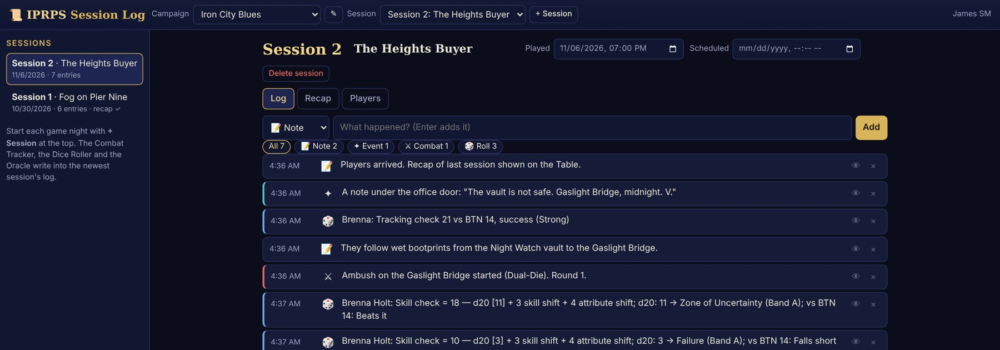
During the game#
Start each game night with + Session at the top. Then add your own entries as you go. Pick the type (📝 Note, ✦ Event, ⚔ Combat, 🎲 Roll, 💰 Loot or ⭐ XP), type what happened, and press Enter.
After the game#
Open the Recap tab:
- Draft from the log writes a first draft of the recap from tonight's entries. In Medium and Advanced, ✦ Draft with the Oracle writes it as a short story instead.
- Edit the draft. It's for the players, so keep secrets out of it.
- Put your secrets in Session Master notes. Players never see them, but the Oracle reads them.
- Copy, Download .md and Print let you share the recap outside IPRPS OS.
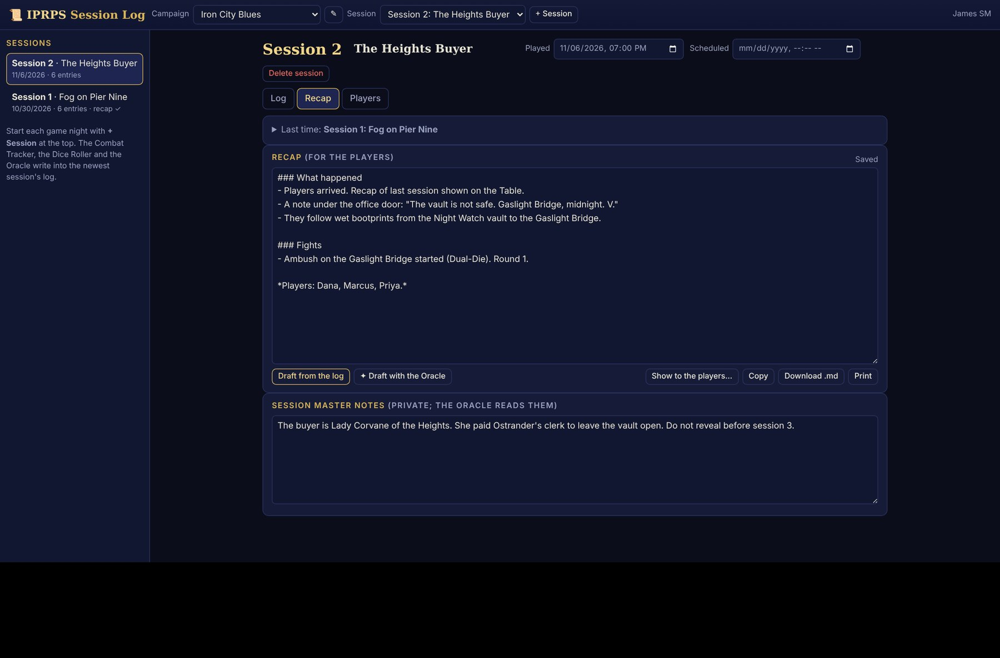
Use the Players tab to record who came and the XP each player earned. XP here is a record. Update each character's XP on their sheet too.
Chapter 10: Keep it running#
IPRPS Updates#
IPRPS OS updates itself without reinstalling. About 10 minutes after you start the computer, and every 6 hours while you're online, it checks for updates. When some are ready, a notice appears on the desktop and on the Hub's IPRPS Updates tile.
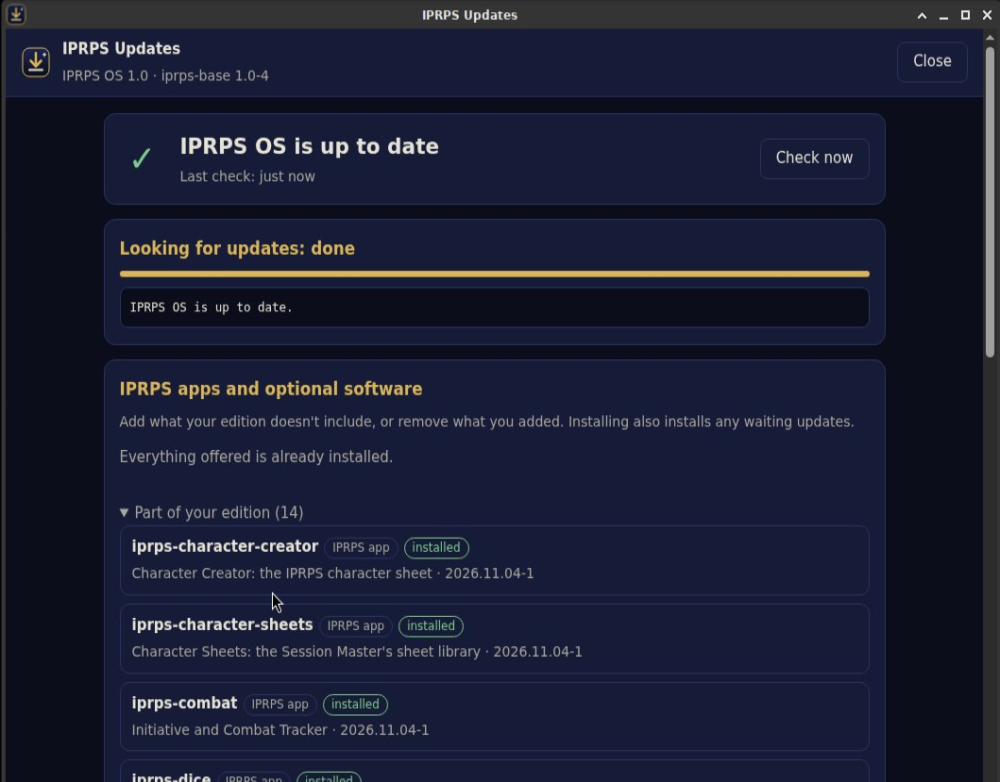
To install them, open IPRPS → IPRPS Updates, type your password, and choose Install updates. Your campaigns, sheets, settings and files are kept. The same window lists extra IPRPS apps and optional software you can add with Install.
Remote players#
A friend who moved away can still join your IPRPS Table. Both computers install Tailscale, a free app that links them over the internet with strong encryption. Your friend then joins exactly like a player on your Wi-Fi, at an address your Table console lists. IPRPS OS itself doesn't change.
In short:
- On your computer, run the
iprps-remote-play.shscript from the IPRPS OS repository, and sign in to Tailscale. - In Tailscale's admin page, share your IPRPS computer with your friend, and add the rule that lets players reach only the Table.
- Your friend installs the Tailscale app, accepts your invite, and opens the
http://100.x.y.z:7777/address with the join code.
Full steps are in docs/REMOTE-PLAYERS.md and in Appendix G of the build guide. Test it with a phone on mobile data first. Pictures and video you show come from your home internet's upload speed, so short clips work best.
Quick reference: game night#
| Moment | Tool | Where |
|---|---|---|
| Open everything for game night | Session Master Mode | Panel at the top of the screen |
| Let players in | Open the table, then Lock | Table console, top |
| Show a map or handout | Push to screens → Add media… → Show | Table console, right |
| Read a scene aloud | Show a text card → Show on screens | Table console, right |
| Music on players' devices | ♪ Play, Loop, ■ Stop sound | Table console, right |
| Whisper to one player | To menu → their name | Table console, message box |
| Talk to a split party | Make from selected, then To → the group | Table console, left |
| Secret roll | Secret (only me), or Secret roll in the Dice Roller | Dice bar / Dice Roller |
| An IPRPS check | IPRPS ▾ → Skill check | Dice bar on any device |
| Start a fight | + New, + Whole party, Roll initiative | Combat Tracker |
| Next turn | Next turn ▶ or the N key | Combat Tracker |
| Thunder! | Click the pad, or press its key | Soundboard |
| A quick NPC or place | NPC, Location | IPRPS Oracle (Medium and up) |
| A faster Oracle | Model menu → a Claude model (online, your key) | IPRPS Oracle, Online AI… |
| End of the night | Draft from the log, then Close the table | Session Log, Table console |
Troubleshooting at the table#
| Problem | What to do |
|---|---|
| A player can't open the Table address | Their device must be on the same Wi-Fi as your computer. Guest Wi-Fi networks often block devices from seeing each other, so use your main network. Check that the table says Open |
| "The table is closed" | Choose Open the table in the console. After a restart, the table always starts closed |
| A player can't join | You may have ticked Lock. Untick it, let them in, then lock again |
| A phone plays no sound | The player must tap the page once. Look for 🔊 Tap to turn on the table sound |
| Someone saw the join code who shouldn't have | Choose New code. Players already at the table stay connected |
| The Combat Tracker says to choose a session | Choose + Session at the top to start tonight's session |
| A character isn't in the From sheets list | Import their sheet into Character Sheets, and set its campaign to this one |
| The Oracle is slow | The first answer of the day takes longest, so start Session Master Mode early. Clear this chat between scenes. The local model needs a fairly recent processor and plenty of memory (16 GB is best). For answers in seconds, choose a Claude model (Chapter 8) |
| The Oracle says A new local model is ready | An update brought a new local model. Open a terminal and type sudo iprps-ai-model upgrade once (it downloads 3.4 GB). The old model keeps working until then |
| Claude: refused the API key, or out of credit | Copy the key again from console.anthropic.com, or add credit to your Anthropic account. The local model always works |
| The computer is slow right after installing IPRPS OS | This happens only once. It is finishing its setup in the background. Wait for the message IPRPS OS setup is finished (10 to 30 minutes), then restart once |
| The players see an old picture | Choose Clear screens, then show the new one |
Glossary#
| Term | Meaning |
|---|---|
| AR (Armor Rating) | Armor's protection. It is subtracted from damage: Damage − AR |
| Band A / Band B | How to read the d20. Band A: Failure, Zone of Uncertainty, Success. Band B: Weak, Standard, Strong, Peak |
| BTN (Base Target Number) | The number a check's total must reach |
| Campaign | Your whole story. Sessions, sheets, fights and notes belong to it |
| Console | The Session Master's screen of the IPRPS Table |
| Development Points (DP) | The points players spend to build characters |
| IPRPS | The Infinite Plane Role Playing System, by Mythical Legends Publishing |
| IPRPS Oracle | The storyteller AI (Medium and Advanced). Llama 3.2 runs on your computer; Claude is an optional online choice |
| API key | A secret code from a company like Anthropic that lets an app use its online AI and charges your account |
| IPRPS Table | Lets players join from their own devices to chat, roll and see what you share |
| Join code | The six-character code players type to join an open table |
| Player display | A full-screen window for players on a second screen |
| Session | One game night. Its log, fights and recap belong to it |
| Session Master (SM) | The person who runs the game |
| Session Master Mode | One click that opens the Hub, ambience and the players' screen |
| Skill Shift / Attribute Shift | What a check adds to the d20: skill ÷ 10, and attribute − 10 |
| Zone of Uncertainty | A d20 of 7 to 12 in Band A. The SM decides what happens, often success with a cost |